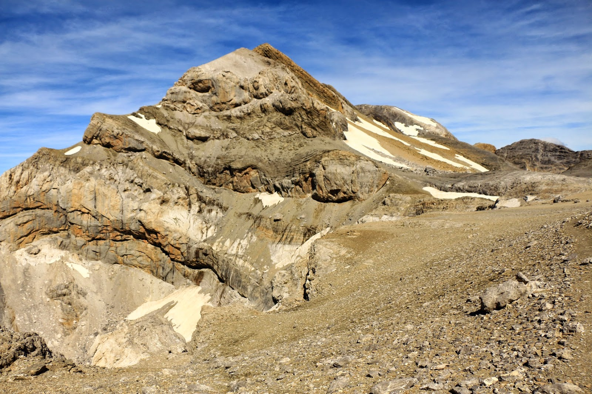
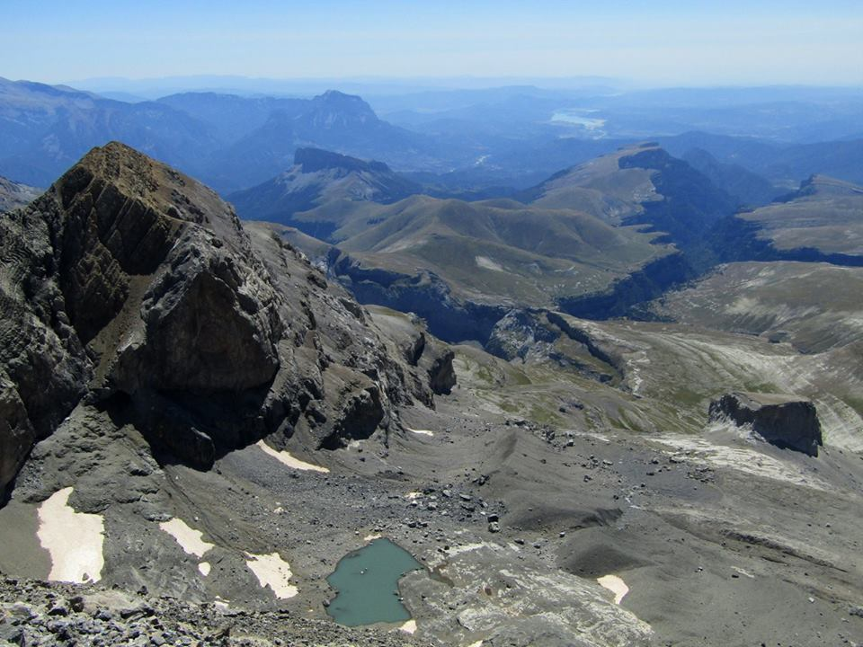

INICIO |
Cilindro de Marboré |
Pico de Marboré |
Monte Perdido |
Pico Añisclo |
Taillón |
|   |
Forma junto con Monte Perdido (3355 m) y el Cilindro (3325 m) las famosas "Tres Sorores" o Tres Serols. La denominación recuerda a Louis Ramond de Carbonnières, al que se le atribuye la primera ascensión al cercano Monte Perdido en 1802 acompañado de los guías Rondo, Laurens. En realidad, según parece, los guías que envió a explorar se adelantaron al propio Ramond, al encontrase a un pastor aragonés en las inmediaciones del collado de Añisclo que a su vez les acompañó a la cumbre. Esto siembra además la duda de si el pastor conocía con antelación el itinerario y lo mostró a los guías. Evidentemente, que sus guías alcanzasen previamente la cumbre no debió ser del agrado de este botánico y geológico precusor del pirineismo. La cumbre sería ascendida en 1877 por el conde Russell. El Monte Perdido, Cilindro y Soum de Ramond comparten la misma estructura geológica y componen un marco paisajístico único. En consonancia con esa realidad se tejió la leyenda de "las tres hermanas" y por idéntica razón cabe encuadrarlas en una ascensión global. |
||||